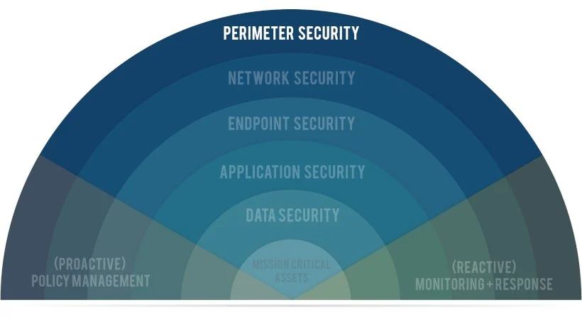

A segurança em camadas é uma estratégia crucial para criar uma defesa robusta contra ameaças cibernéticas. Em vez de depender de uma única medida de segurança, a abordagem em camadas envolve a combinação de várias tecnologias e práticas, como firewalls para proteger a rede, antivírus para detectar e remover malware, e sistemas de monitoramento para identificar atividades suspeitas. Cada camada adiciona uma camada adicional de proteção, tornando mais difícil para os atacantes comprometerem o sistema.
Implementar segurança em camadas também envolve considerar a proteção física e a segurança de aplicações, garantindo que não haja brechas em nenhum ponto da infraestrutura. Esse método oferece resiliência contra ataques, já que a falha de uma camada não comprometerá a segurança global. Além disso, realizar auditorias regulares e atualizar as práticas de segurança conforme novas ameaças surgem é essencial para manter a eficácia da defesa em camadas, assegurando que a organização esteja sempre preparada para enfrentar as ameaças emergentes.